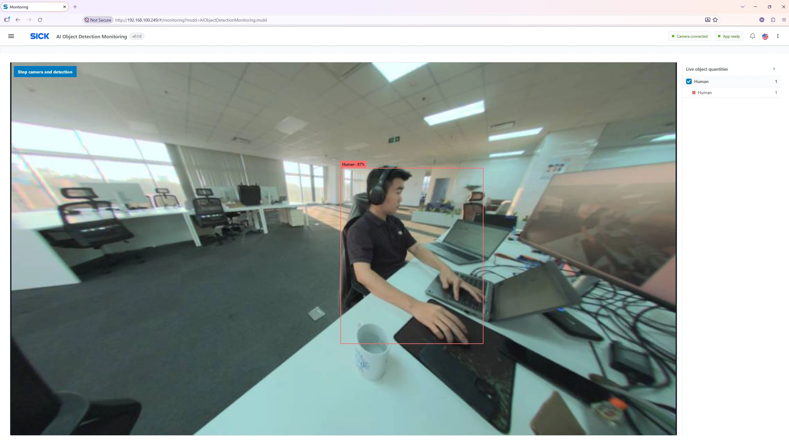

Visionary AI Object Detection Monitoring
Operate, configure and monitor object detection directly on the SICK Visionary B-Two camera — with practical guidance for operators, service engineers and application engineers.
What the application does
The camera captures the live scene, runs an enabled deep-learning object-detection network model, and shows the identified object classes, confidence percentages, bounding boxes and current visible quantities in the browser. Optional MQTT and Crown WebSocket outputs make the results available to other systems.
Daily monitoring
See the live image, detection boxes, current object quantities and camera status. Stop or resume camera monitoring when required.
Model management
Add compatible network JSON files, set confidence and recognition timing, choose which model runs and reload to apply.
Capture & integrate
Collect example images, monitor logs, configure MQTT and access the camera using its external Crown API.
Getting started
- Confirm the Visionary B-Two camera is reachable over the network and this AppSpace application is installed and running.
- Confirm the required Deep Learning Classification license (SICK part number 1614850) is activated. Inference without a full device license can be 120-minute time limited and subsequently blocked.
-
Open the camera in a browser, for example
http://<camera-ip>/#/monitoring?msdd=AIObjectDetectionMonitoring.msdd. Replace the example IP with the actual camera address. Use the application navigation menu to switch pages. - Obtain the compatible people-detection network model JSON separately from SICK and add it from Network models before enabling it.
- Check Settings, configure the required model and select Reload app from the header menu after changes; verify Camera connected and App ready.
- Open Monitoring; confirm the live scene and object boxes match expectations. Keep the scene and camera position stable for reliable results.
Application at a glance

Optimized configuration
Download the supplied configuration backup and import it using Settings → Import settings. Keep the file unchanged if you want to reproduce the provided configuration.
↓ Download optimized settings v1.0.0 (JSON)
Human). The Human model JSON is not in this
documentation and will be supplied separately by SICK. Importing a
backup does not upload model files. See
Backup & import.
What is included in this manual
Open sections from the fixed left sidebar. Dedicated pages explain Monitoring, Network models, Image collection, Log monitoring, every Settings tab, License Manager, integration, REST APIs and troubleshooting. The screenshots can be enlarged by clicking them.